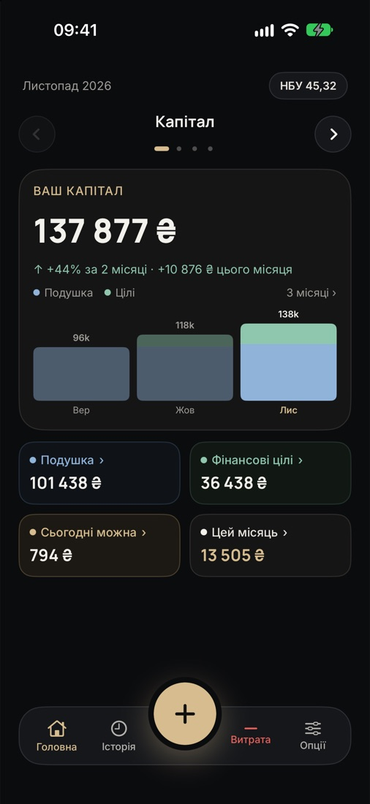
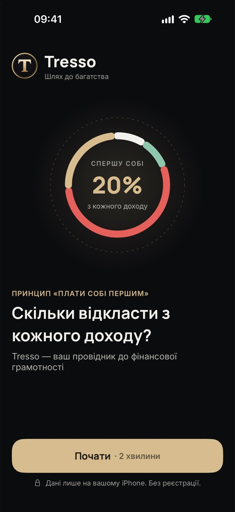
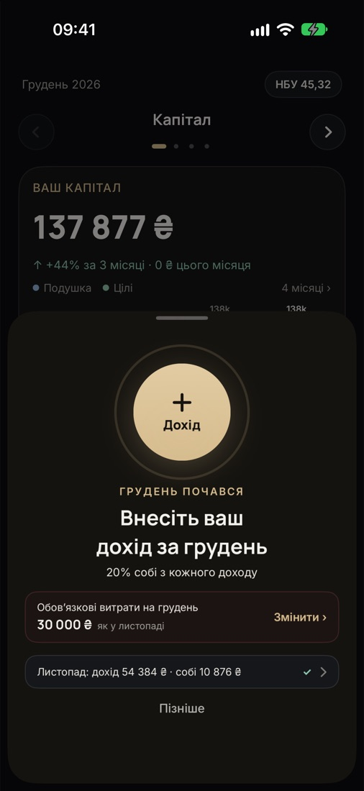
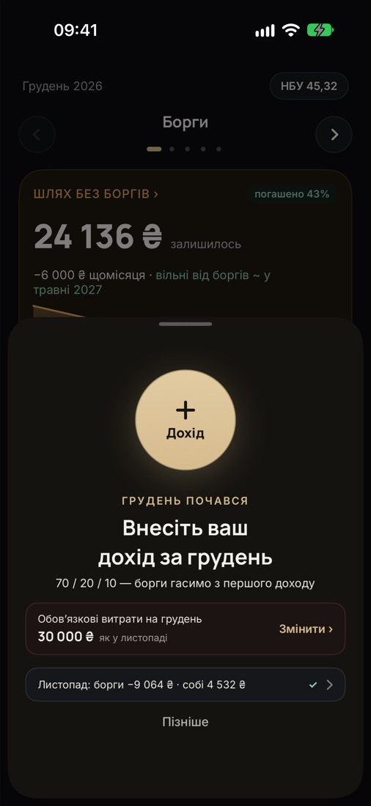

Tresso — ваш провідник до фінансової грамотності. Внесли отриманий дохід — і застосунок одразу підказує, скільки з нього покриває обов’язкові витрати, скільки відкласти в подушку безпеки й на фінансові цілі та скільки можна спокійно витратити.
Скоро в App Store Як це працюєiPhone · iOS 18 і новіші · українською · без реєстрації · дані лише на вашому iPhone

Більшість відкладає «що залишилось» наприкінці місяця — а залишається нуль. Tresso перевертає порядок: спершу частина доходу йде вам, витрачається решта. Ідеї — з книжки Джорджа Клейсона «Найбагатша людина у Вавилоні».
Внесіть суму в гривнях, доларах чи євро — Tresso запропонує розподіл за вашим профілем (5–30% собі). Будь-яку суму можна змінити.
Скільки місяців спокою у вас уже є і до якої дати вистачить. Ціль за замовчуванням — 6 місяців обов’язкових витрат.
Лікування, ремонт, навчання, власне житло. Топ-3 у роботі, черга, досягнуті цілі й порада тримати гроші у валюті цілі.
70% на життя, 20% кредиторам, 10% собі. Черга за методом «Лавина», нагадування про оплату і прогноз дати без боргів.
Денний ліміт із вільних коштів місяця: скільки можна витратити сьогодні, щоб не зачепити відкладене.
Коротка цитата про гроші щодня і сім уроків «Вавилону», що відкриваються за вашими кроками.
Темна тема, великі цифри, жодних таблиць. Анкета на 2 хвилини — і план готовий.



Без реєстрації, реклами й аналітики. Усі суми зберігаються тільки на вашому iPhone; застосунок звертається в мережу лише по відкриті курси валют НБУ, ПриватБанку та monobank. Можна захистити Face ID. Детальніше — у політиці конфіденційності.